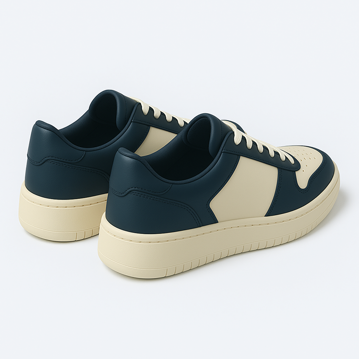

- 
Platform 404
NT$2,600NT$3,200
Platform 404 以柔和奶白為底，搭配深藍色皮革點綴，走在街上自帶回頭率。鞋型採用復古運動風輪廓，結合輕量厚底與柔軟泡棉鞋舌，兼顧美感與舒適。
鞋身選用柔軟皮革材質，打造出清新卻不失個性的氛圍，並以鞋面透氣孔設計提升穿著體驗，兼顧質感與舒適度，適合日常長時間著用。無論是街頭穿搭、日常通勤或週末出遊都能輕鬆駕馭。
顏色
尺寸
僅剩 3 雙
-
商品材質
- 鞋面：合成皮革（Synthetic Leather）
- 內裡：透氣網布材質，提升舒適與排汗性
- 鞋底：EVA 輕量發泡橡膠，具備良好緩震與止滑效果
- 鞋帶：聚酯纖維，耐拉扯不易鬆脫
-
購買須知
商品顏色因螢幕顯示可能略有差異，請以實品為準。 建議首次穿著前試穿確認尺寸，避免影響退換貨權益。 本商品為限量發售，庫存有限，如需更換尺寸請儘早聯繫客服協助處理。
-
保養方式
建議以乾布或微濕軟布擦拭表面汙漬，避免機洗或長時間浸水。 收納時請放置於乾燥通風處，避免日曬及高溫導致變形或龜裂。 若需深層清潔，建議使用中性清潔劑並搭配柔刷輕刷，勿使用漂白水或強酸強鹼清潔劑。